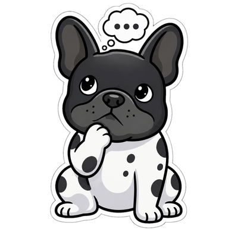

Мозг Були
На какой нейросети ему думать
При смене провайдера или адреса сервера введите ключ заново.
Нужна модель, которая умеет вызывать инструменты (tools) — иначе Буля не сможет открывать программы и делать документы.
Сохранённый ключ зашифрован средствами Windows; при запросе он передаётся выбранному серверу для авторизации. Текст чата, выбранные воспоминания и результаты умений отправляются модели. Фильтр скрывает часть личных данных, но может ошибаться. Прикреплённые картинки отправляются без маскирования. Для локальной модели выбери Ollama. Без нейросети Буля понимает простые команды: «открой Телеграм», «пауза», «напомни через 10 минут…».